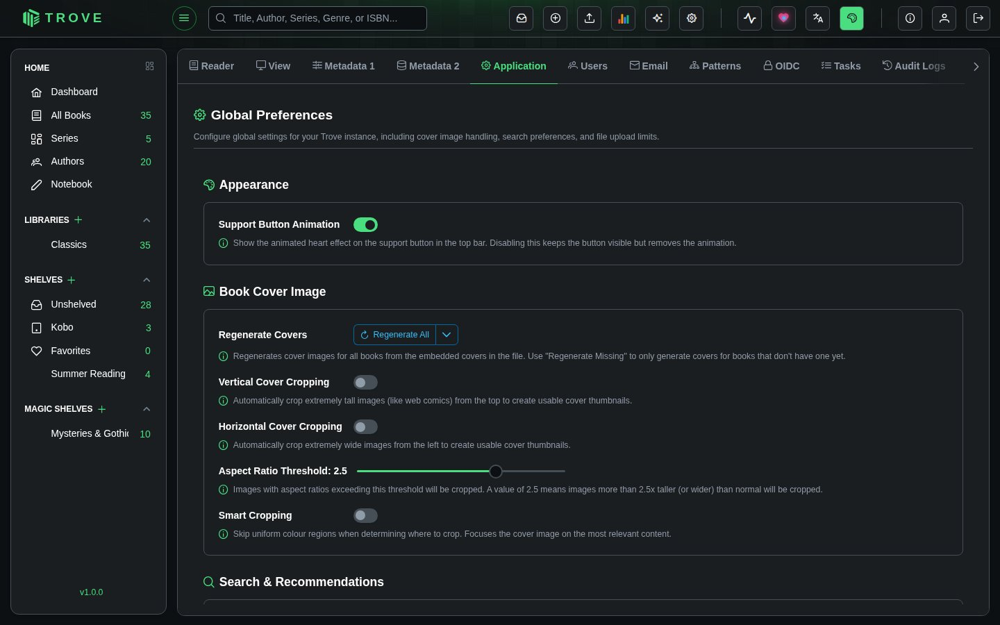

Application settings
Configure global settings for your Trove instance, including cover image handling, search preferences, and file upload limits. These settings apply to all users on the server.
Navigate to Settings > Application to access this page. Requires the Manage Application Preferences permission.

Book Cover Image
Controls how Trove generates and processes book cover thumbnails.
Regenerate Covers
Regenerate All re-extracts every book's cover from the cover inside its file; Regenerate Missing only does books that have no cover yet. Both run in the background. Books whose cover is locked are skipped.
Cover Cropping
Some book files contain covers that are extremely tall (like web comics or manga scans) or extremely wide (like panoramic images). These don't display well as thumbnails. Cover cropping automatically trims these images to a standard portrait ratio (approximately 2:3).
| Setting | Default | Description |
|---|---|---|
| Vertical Cover Cropping | Off | Crops extremely tall images from the top to create usable thumbnails. Useful for web comics and vertically-scrolling manga. |
| Horizontal Cover Cropping | Off | Crops extremely wide images from the left to create usable thumbnails. |
| Aspect Ratio Threshold | 2.5 | Controls when cropping kicks in. Only images with an aspect ratio exceeding this value are cropped. A value of 2.5 means images more than 2.5x taller (or wider) than normal will be cropped. Range: 1.5 to 3.0. |
| Smart Cropping | Off | When enabled, the cropping algorithm skips uniform color regions (borders, margins) and focuses on the most relevant content. Without smart cropping, images are simply trimmed from the top or left edge. |
How cropping works:
- When a cover is generated, Trove checks if its aspect ratio exceeds the threshold
- If vertical cropping is enabled and the image is too tall, it's cropped to a standard portrait ratio
- If horizontal cropping is enabled and the image is too wide, it's cropped similarly
- With smart cropping on, the algorithm scans from the edges to find where actual content begins (skipping blank or solid-color borders) and crops from there
Search & Recommendations
| Setting | Default | Description |
|---|---|---|
| Auto Book Search | On | Automatically attempts to find metadata matches when you open the book information panel. Disable this if you prefer to trigger metadata searches manually. |
| Similar Book Recommendation | On | Enables the "Similar Books" feature that recommends books from your library based on content similarity. Recommendations are generated by the Update Book Recommendations task. |
File Management
| Setting | Default | Description |
|---|---|---|
| Max File Upload Size | 100 MB | The largest file, in MB, that can be uploaded, to a library or to Bookdrop. Up to 10,240 MB. |
Enter a new value and click Save to update.
The new limit applies to the next upload; there's no need to restart. A reverse proxy in front of Trove may have its own limit (nginx's client_max_body_size, or Cloudflare's 100 MB), which also needs raising.
Appearance
Support Button Animation turns the animated heart on the support button in the top bar on or off. The button itself stays.
Notes
- All settings changes are recorded in the Audit Log.
- Cover cropping settings apply globally. After changing them, use Regenerate Covers to apply the new settings to existing books. New books will use the updated settings automatically.
- The aspect ratio threshold slider moves in increments of 0.1. Lower values crop more aggressively; higher values are more lenient.
- Disabling Similar Book Recommendation hides the recommendation section in the book detail view but does not delete the computed recommendations.